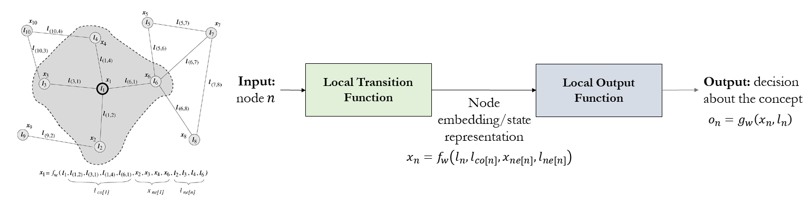
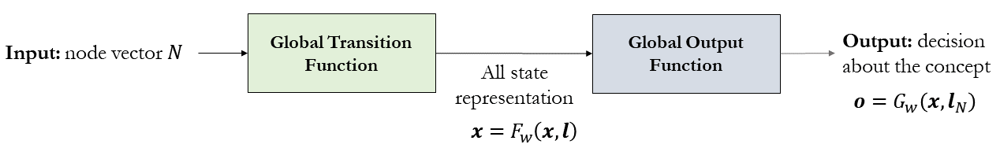

Graph Neural Networks (GNN)¶
Graph Neural Network [13] is a type of neural Network which directly operates on the graph structure. In GNN, graph nodes represent objects or concepts, and edges represent their relationships. Each concept is naturally defined by its features and the related concepts. Thus, we can attach a hidden state \(x_n \in R^s\) to each node \(n\) that is based on the information contained in the neighborhood of \(n\). The following figure illustrated the embedding process of each node using local transition and local output functions.

where \(l_n,l_{co[n]},x_{ne[n]}\) and \(l_{ne[n]}\) are the label of \(n\), the labels of its edges, the states, and the labels of the nodes in the neighborhood of \(n\), respectively. \(x,o,l\) and \(l_N\) are the vectors constructed by stacking all the states, all the outputs, all the labels, and all the node labels, respectively as illustrated below.

The following figure summarizes the GNN-based embedding process [14].

GNN is used in several smart mobility applications. For example, the accuracy of real time ETAs was improved by up to 50% in places like Berlin, Jakarta, São Paulo, Sydney, Tokyo, and Washington D.C. by using advanced machine learning techniques including Graph Neural Networks, such as DeepMind.
Graph Convolutional Neural Network (GCNs)¶
In a graph convolutional neural network, embedding can take the following form:
\(h^k_v=f(W_k \sum\limits_{u \in N(j)} \frac{1}{|N(v)|} h^{k-1}_u + B_k h^{k-1}_v), \forall k \in \{1,...,K\}\)
where
\(h_v^k\) is node \(v\) embedding after \(k\) layers of neighbourhood aggregation
\(\sum\limits_{u \in N(j)} \frac{1}{|N(v)|} h^{k-1}_u\) are neighbors’ representations (average of neighbor’s previous layer embeddings)
\(B_k h^{k-1}_v\) represent own representation of node \(v\) in previous layer \(k-1\)
\(f\) is a non-linearity function such as ReLU.
Using GCN to solve TSP¶
GCNs can also be used to predict “likely” edges that would appear in a solution to TSP. These likely edges can then be run through a beam search to look for near-optimal solutions.
This example will use code adapted from this paper.
Import dependencies¶
# Some initial setup
import os
import json
import argparse
import time
import numpy as np
import torch
from torch.autograd import Variable
import torch.nn.functional as F
import torch.nn as nn
import matplotlib
import matplotlib.pyplot as plt
import networkx as nx
from sklearn.utils.class_weight import compute_class_weight
from tensorboardX import SummaryWriter
from fastprogress import master_bar, progress_bar
# Remove warning
import warnings
warnings.filterwarnings("ignore", category=UserWarning)
from scipy.sparse import SparseEfficiencyWarning
warnings.simplefilter('ignore', SparseEfficiencyWarning)
from graph_convnet.config import *
from graph_convnet.utils.graph_utils import *
from graph_convnet.utils.google_tsp_reader import GoogleTSPReader
from graph_convnet.utils.plot_utils import *
from graph_convnet.models.gcn_model import ResidualGatedGCNModel
from graph_convnet.utils.model_utils import *
Enable Notebook mode for Jupyter Notebook¶
notebook_mode = True
viz_mode = False
if notebook_mode == True:
%load_ext autoreload
%autoreload 2
%matplotlib inline
from IPython.display import set_matplotlib_formats
set_matplotlib_formats('png')
/tmp/ipykernel_12636/2361144546.py:9: DeprecationWarning: `set_matplotlib_formats` is deprecated since IPython 7.23, directly use `matplotlib_inline.backend_inline.set_matplotlib_formats()`
set_matplotlib_formats('png')
Load TSP20 Configuration Files¶
config_path = "graph_convnet/configs/tsp20.json"
config = get_config(config_path)
print("Loaded {}:\n{}".format(config_path, config))
Loaded graph_convnet/configs/tsp20.json:
{'expt_name': 'tsp20', 'gpu_id': '1', 'train_filepath': 'graph_convnet/data/tsp20_train_concorde.txt', 'val_filepath': 'graph_convnet/data/tsp20_val_concorde.txt', 'test_filepath': 'graph_convnet/data/tsp20_test_concorde.txt', 'num_nodes': 20, 'num_neighbors': -1, 'node_dim': 2, 'voc_nodes_in': 2, 'voc_nodes_out': 2, 'voc_edges_in': 3, 'voc_edges_out': 2, 'beam_size': 1280, 'hidden_dim': 300, 'num_layers': 30, 'mlp_layers': 3, 'aggregation': 'mean', 'max_epochs': 1500, 'val_every': 5, 'test_every': 100, 'batch_size': 20, 'batches_per_epoch': 500, 'accumulation_steps': 1, 'learning_rate': 0.001, 'decay_rate': 1.01}
Setup GPU and CUDA¶
os.environ["CUDA_DEVICE_ORDER"] = "PCI_BUS_ID"
os.environ["CUDA_VISIBLE_DEVICES"] = str(config.gpu_id)
if torch.cuda.is_available():
print("CUDA available, using GPU ID {}".format(config.gpu_id))
dtypeFloat = torch.cuda.FloatTensor
dtypeLong = torch.cuda.LongTensor
torch.cuda.manual_seed(1)
else:
print("CUDA not available")
dtypeFloat = torch.FloatTensor
dtypeLong = torch.LongTensor
torch.manual_seed(1)
CUDA not available
Setup Network and parameters¶
if notebook_mode == True:
# Instantiate the network
net = nn.DataParallel(ResidualGatedGCNModel(config, dtypeFloat, dtypeLong))
if torch.cuda.is_available():
net.cuda()
# Compute number of network parameters
nb_param = 0
for param in net.parameters():
nb_param += np.prod(list(param.data.size()))
print('Number of parameters:', nb_param)
# Define optimizer
learning_rate = config.learning_rate
optimizer = torch.optim.Adam(net.parameters(), lr=learning_rate)
print(optimizer)
Number of parameters: 11054402
Adam (
Parameter Group 0
amsgrad: False
betas: (0.9, 0.999)
eps: 1e-08
lr: 0.001
weight_decay: 0
)
Load Previous Training Checkpoint¶
if notebook_mode==True:
# Load checkpoint
log_dir = f"graph_convnet/logs/{config.expt_name}/"
if torch.cuda.is_available():
checkpoint = torch.load(log_dir+"best_val_checkpoint.tar")
else:
checkpoint = torch.load(log_dir+"best_val_checkpoint.tar", map_location='cpu')
# Load network state
net.load_state_dict(checkpoint['model_state_dict'])
# Load optimizer state
optimizer.load_state_dict(checkpoint['optimizer_state_dict'])
# Load other training parameters
epoch = checkpoint['epoch']
train_loss = checkpoint['train_loss']
val_loss = checkpoint['val_loss']
for param_group in optimizer.param_groups:
learning_rate = param_group['lr']
print(f"Loaded checkpoint from epoch {epoch}")
Loaded checkpoint from epoch 1455
Function to convert metrics to text¶
def metrics_to_str(epoch, time, learning_rate, loss, err_edges, err_tour, err_tsp, pred_tour_len, gt_tour_len):
result = ( 'epoch:{epoch:0>2d}\t'
'time:{time:.1f}h\t'
'lr:{learning_rate:.2e}\t'
'loss:{loss:.4f}\t'
# 'err_edges:{err_edges:.2f}\t'
# 'err_tour:{err_tour:.2f}\t'
# 'err_tsp:{err_tsp:.2f}\t'
'pred_tour_len:{pred_tour_len:.3f}\t'
'gt_tour_len:{gt_tour_len:.3f}'.format(
epoch=epoch,
time=time/3600,
learning_rate=learning_rate,
loss=loss,
# err_edges=err_edges,
# err_tour=err_tour,
# err_tsp=err_tsp,
pred_tour_len=pred_tour_len,
gt_tour_len=gt_tour_len))
return result
Function to run test data¶
def test(net, config, master_bar, mode='test'):
# Set evaluation mode
net.eval()
# Assign parameters
num_nodes = config.num_nodes
num_neighbors = config.num_neighbors
batch_size = config.batch_size
batches_per_epoch = config.batches_per_epoch
beam_size = config.beam_size
val_filepath = config.val_filepath
test_filepath = config.test_filepath
# Load TSP data
if mode == 'val':
dataset = GoogleTSPReader(num_nodes, num_neighbors, batch_size=batch_size, filepath=val_filepath)
elif mode == 'test':
dataset = GoogleTSPReader(num_nodes, num_neighbors, batch_size=batch_size, filepath=test_filepath)
batches_per_epoch = dataset.max_iter
# Convert dataset to iterable
dataset = iter(dataset)
# Initially set loss class weights as None
edge_cw = None
# Initialize running data
running_loss = 0.0
# running_err_edges = 0.0
# running_err_tour = 0.0
# running_err_tsp = 0.0
running_pred_tour_len = 0.0
running_gt_tour_len = 0.0
running_nb_data = 0
running_nb_batch = 0
with torch.no_grad():
start_test = time.time()
for batch_num in progress_bar(range(batches_per_epoch), parent=master_bar):
# Generate a batch of TSPs
try:
batch = next(dataset)
except StopIteration:
break
# Convert batch to torch Variables
x_edges = Variable(torch.LongTensor(batch.edges).type(dtypeLong), requires_grad=False)
x_edges_values = Variable(torch.FloatTensor(batch.edges_values).type(dtypeFloat), requires_grad=False)
x_nodes = Variable(torch.LongTensor(batch.nodes).type(dtypeLong), requires_grad=False)
x_nodes_coord = Variable(torch.FloatTensor(batch.nodes_coord).type(dtypeFloat), requires_grad=False)
y_edges = Variable(torch.LongTensor(batch.edges_target).type(dtypeLong), requires_grad=False)
y_nodes = Variable(torch.LongTensor(batch.nodes_target).type(dtypeLong), requires_grad=False)
# Compute class weights (if uncomputed)
if type(edge_cw) != torch.Tensor:
edge_labels = y_edges.cpu().numpy().flatten()
edge_cw = compute_class_weight("balanced", classes=np.unique(edge_labels), y=edge_labels)
# Forward pass
y_preds, loss = net.forward(x_edges, x_edges_values, x_nodes, x_nodes_coord, y_edges, edge_cw)
loss = loss.mean() # Take mean of loss across multiple GPUs
# Compute error metrics
# err_edges, err_tour, err_tsp, tour_err_idx, tsp_err_idx = edge_error(y_preds, y_edges, x_edges)
# Get batch beamsearch tour prediction
if mode == 'val': # Validation: faster 'vanilla' beamsearch
bs_nodes = beamsearch_tour_nodes(
y_preds, beam_size, batch_size, num_nodes, dtypeFloat, dtypeLong, probs_type='logits')
elif mode == 'test': # Testing: beamsearch with shortest tour heuristic
bs_nodes = beamsearch_tour_nodes_shortest(
y_preds, x_edges_values, beam_size, batch_size, num_nodes, dtypeFloat, dtypeLong, probs_type='logits')
# Compute mean tour length
pred_tour_len = mean_tour_len_nodes(x_edges_values, bs_nodes)
gt_tour_len = np.mean(batch.tour_len)
# Update running data
running_nb_data += batch_size
running_loss += batch_size* loss.data.item()
# running_err_edges += batch_size* err_edges
# running_err_tour += batch_size* err_tour
# running_err_tsp += batch_size* err_tsp
running_pred_tour_len += batch_size* pred_tour_len
running_gt_tour_len += batch_size* gt_tour_len
running_nb_batch += 1
# Log intermediate statistics
result = ('loss:{loss:.4f} pred_tour_len:{pred_tour_len:.3f} gt_tour_len:{gt_tour_len:.3f}'.format(
loss=running_loss/running_nb_data,
pred_tour_len=running_pred_tour_len/running_nb_data,
gt_tour_len=running_gt_tour_len/running_nb_data))
master_bar.child.comment = result
# Compute statistics for full epoch
loss = running_loss/ running_nb_data
err_edges = 0 # running_err_edges/ running_nb_data
err_tour = 0 # running_err_tour/ running_nb_data
err_tsp = 0 # running_err_tsp/ running_nb_data
pred_tour_len = running_pred_tour_len/ running_nb_data
gt_tour_len = running_gt_tour_len/ running_nb_data
return time.time()-start_test, loss, err_edges, err_tour, err_tsp, pred_tour_len, gt_tour_len
Test model on randomly generated graphs¶
if notebook_mode==True:
# Set evaluation mode
net.eval()
batch_size = 3
num_nodes = config.num_nodes
num_neighbors = config.num_neighbors
beam_size = config.beam_size
test_filepath = config.test_filepath
dataset = iter(GoogleTSPReader(num_nodes, num_neighbors, batch_size, test_filepath))
batch = next(dataset)
with torch.no_grad():
# Convert batch to torch Variables
x_edges = Variable(torch.LongTensor(batch.edges).type(dtypeLong), requires_grad=False)
x_edges_values = Variable(torch.FloatTensor(batch.edges_values).type(dtypeFloat), requires_grad=False)
x_nodes = Variable(torch.LongTensor(batch.nodes).type(dtypeLong), requires_grad=False)
x_nodes_coord = Variable(torch.FloatTensor(batch.nodes_coord).type(dtypeFloat), requires_grad=False)
y_edges = Variable(torch.LongTensor(batch.edges_target).type(dtypeLong), requires_grad=False)
y_nodes = Variable(torch.LongTensor(batch.nodes_target).type(dtypeLong), requires_grad=False)
# Compute class weights
edge_labels = y_edges.cpu().numpy().flatten()
edge_cw = compute_class_weight("balanced", classes=np.unique(edge_labels), y=edge_labels)
print("Class weights: {}".format(edge_cw))
# Forward pass
y_preds, loss = net.forward(x_edges, x_edges_values, x_nodes, x_nodes_coord, y_edges, edge_cw)
loss = loss.mean()
# Get batch beamsearch tour prediction
bs_nodes = beamsearch_tour_nodes_shortest(
y_preds, x_edges_values, beam_size, batch_size, num_nodes, dtypeFloat, dtypeLong, probs_type='logits')
#bs_nodes = beamsearch_tour_nodes(
# y_preds, beam_size, batch_size, num_nodes, dtypeFloat, dtypeLong, probs_type='logits')
# Compute mean tour length
pred_tour_len = mean_tour_len_nodes(x_edges_values, bs_nodes)
gt_tour_len = np.mean(batch.tour_len)
print("Predicted tour length: {:.3f} (mean)\nGroundtruth tour length: {:.3f} (mean)".format(pred_tour_len, gt_tour_len))
# Sanity check
for idx, nodes in enumerate(bs_nodes):
if not is_valid_tour(nodes, num_nodes):
print(idx, " Invalid tour: ", nodes)
# Plot prediction visualizations
plot_predictions_beamsearch(x_nodes_coord, x_edges, x_edges_values, y_edges, y_preds, bs_nodes, num_plots=batch_size)
Class weights: [0.55555556 5. ]
Predicted tour length: 4.273 (mean)
Groundtruth tour length: 4.273 (mean)
Resources:¶
Graph Convolutional Network Technique for the Travelling Salesman Problem
A library for graph neural networks in jax (Jraph)
Deep Graph Library (DGL)
Graph Nets Library (Graph Nets)
PyTorch Geometric Library (PyTorch Geometric)
Stanford Network Analysis Platform (SNAP)